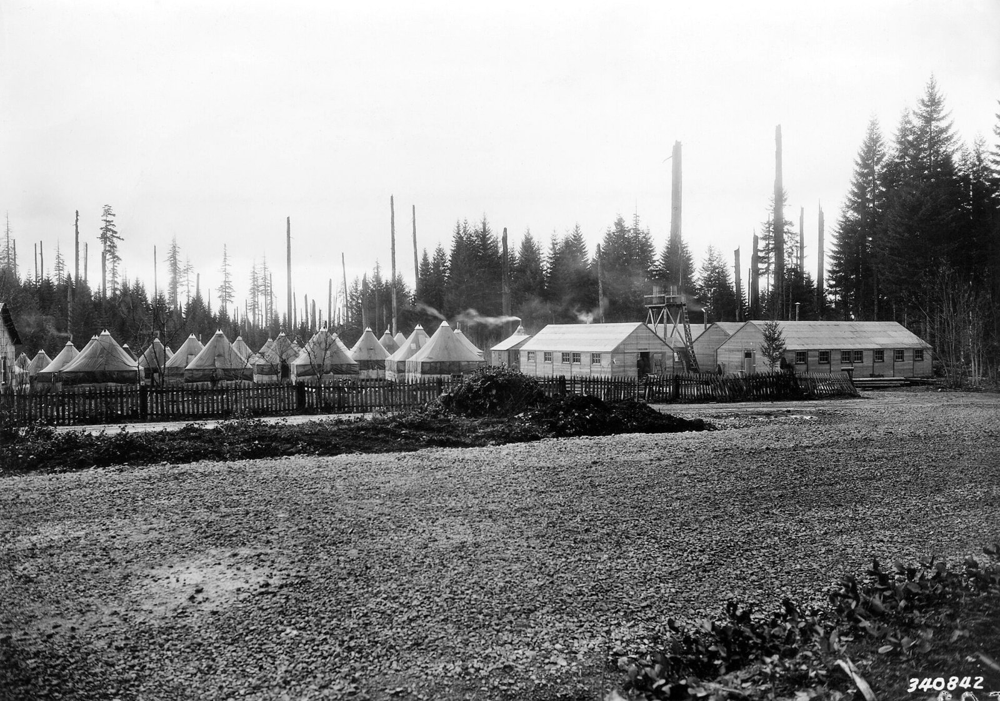

Directions: Work through the five stations in order. Each station presents one piece of the 1935 settlement: a work program, an insurance law read in its own words, the boundary written into that law, a labor case, and the tax that helped pay for it all. Answer the questions at each station. At the end, build the settlement chart and judge which element of the settlement changed the federal government's role most permanently.
Source: Summary of the Works Progress Administration's record, prepared for this lesson from the agency's published reports and the National Archives' summary of the program. It is a summary of the record, not a transcription of one report.

The Works Progress Administration was created in May 1935 under Harry Hopkins. Between 1935 and its closing in 1943 it employed about 8.5 million people. At its height, in November 1938, about 3.3 million people were on its payroll at once. Its crews built or improved hundreds of thousands of miles of roads and built or repaired thousands of schools, courthouses, hospitals, and airports. Projects were proposed by state and local governments, which supplied materials and some costs, while the federal government paid most wages. A WPA wage was set below private wages for the same work, so that the program relieved unemployment without drawing workers out of private jobs.
What share of a WPA project's cost did the federal government mainly pay, and what did state and local governments supply? Why was the arrangement built that way, according to the station?
The WPA wage was held below private wages on purpose. State the purpose, and name one risk that design created for the worker on the project.
Source: Social Security Act of 1935, Public Law 74-271, Title II, section 202(a), United States Statutes at Large (49 Stat. 620). Quoted with cuts, each cut marked with an ellipsis.
"Every qualified individual (as defined in section 210) shall be entitled to receive, with respect to the period beginning on the date he attains the age of sixty-five, or on January 1, 1942, whichever is the later, and ending on the date of his death, an old-age benefit (payable as nearly as practicable in equal monthly installments) as follows ..."
The same act created unemployment insurance in Title III, run with the states, and grants to the states in Title IV for aid to dependent children. Its tax title placed a tax on wages, paid by the worker and matched by the employer, beginning in 1937.
The section says a qualified individual "shall be entitled" to the benefit. What is the difference between a benefit a person is entitled to by law and a benefit an agency may choose to give?
Monthly benefits under this text could not begin before January 1, 1942, although the tax began in 1937. Give one reason the law was built with that gap, using the funding described in the station.
Source: Social Security Act of 1935, Public Law 74-271, the definition of employment in section 210, United States Statutes at Large. The section lists the services the word employment does not cover. Quoted with cuts, each cut marked with an ellipsis.
"The term 'employment' ... shall not include ... (1) Agricultural labor; (2) Domestic service in a private home ..."
Historians of the act record that in the mid 1930s about three fifths of Black workers in the United States worked in agriculture or domestic service, and that in the South the share was higher. Women made up most of the domestic service workforce. The exclusion was defended in 1935 as a matter of administration: farm and household wages were paid in cash, in kind, and at irregular intervals, and collecting a payroll tax on them was said to be impracticable at the start.
Why does a definition decide who a law protects? Answer through this example: what happened to a farm worker's old age when his work was placed outside the definition?
The station gives an administrative reason for the exclusion and then gives the figures on who worked in the excluded fields. Explain why both have to be stated for the history to be honest.
Source: Teaching summary prepared for this lesson from the National Labor Relations Act of 1935 (the Wagner Act) and the early practice of the National Labor Relations Board. It describes a typical case of the board's first years. It is not the record of one named case.
At a textile mill, organizers from a union sign up a majority of the workers on cards. The union asks the National Labor Relations Board for an election. The board's agents check the cards, set a date, and run a secret ballot vote in the mill. The union wins. Under the act, the mill owner must now meet the union and bargain over wages and hours; refusing to bargain is an unfair labor practice. During the campaign the owner had fired two organizers. The board hears the charge, finds the firings were punishment for union activity, and orders the two workers reinstated with back pay.
Name three separate powers the board exercises in this summary, and the part of the case where each one appears.
Before 1935, a mill owner in most states could fire union organizers and refuse all contact with a union. What, exactly, did the Wagner Act change for the two fired organizers in this case?
Source: Revenue Act of 1935, Public Law 74-198, rate schedules as enacted, United States Statutes at Large. The table gives the top rates of the act, not the rates paid on ordinary incomes.
| Tax | Applies above | Top rate |
|---|---|---|
| Individual income tax | $5,000,000 of income | 75 percent |
| Estate tax | $50,000,000 of estate | 70 percent |
| Corporation income tax | Graduated by size of income | 15 percent |
The individual rate of seventy-five percent applied only to income above five million dollars, a level reached in those years by a handful of taxpayers. The act raised far less money than the new programs cost. Its supporters presented it as an answer to the charge, pressed by Huey Long's movement, that the New Deal had left great fortunes untouched.
Why do the thresholds in the table matter to judging the act? What would be wrong with reporting only the seventy-five percent figure?
The station says the act's larger purpose was political rather than financial. State the evidence for that judgment given in the station text.
Complete the chart from your station work. For each measure, record the permanent duty the federal government accepted, who it covered, who it left out, and how it was paid for.
| Measure | Permanent duty accepted | Who it covered | Who it left out | How it was paid for |
|---|---|---|---|---|
| WPA | ||||
| Social Security Act | ||||
| Wagner Act | ||||
| Revenue Act of 1935 |
Judge the chart. Which element of the 1935 settlement changed the federal government's role most permanently? Defend your answer in a short paragraph, using evidence from at least two stations and naming who your chosen element protected.
What did the federal government mainly pay, and what did the states and towns supply? The federal government paid most wages. State and local governments proposed the projects and supplied materials and some costs. The arrangement put the hiring decision near the work that needed doing, so projects matched local needs, while Washington carried the wage bill that local budgets in a depression could not carry.
Why was the WPA wage held below private wages, and what risk did that create? The purpose was to relieve unemployment without drawing workers out of private jobs: a WPA job had to remain less attractive than a private job so that workers would leave the rolls when private hiring returned. The risk was that the wage might not support a family at a decent standard, leaving the worker employed and poor at the same time, which is the criticism relief workers themselves raised about the security wage.
What is the difference between an entitlement and a benefit given by choice? An entitlement belongs to the qualified person by law. The statute's words, "shall be entitled to receive," mean the government owes the benefit when the conditions are met, and the person can claim it as a right. A benefit given by choice depends on an agency's funds and discretion and can be refused, reduced, or ended without breaking the law. That difference is the core of the 1935 settlement's old-age insurance.
Why the gap between the tax (1937) and monthly benefits (1942)? The insurance was designed to be funded from the payroll taxes as they accumulated, so contributions had to build the fund before monthly payments began. The gap also gave workers time in covered employment to qualify. Either reason, tied to the payroll tax funding in the station, earns credit.
Why does a definition decide who a law protects? Rights in the act attached to employment in covered work. A farm worker's labor was placed outside the definition of employment, so no payroll tax was collected on his wages, no wage record was built, and no old-age benefit could be earned from that work. His old age stood outside the insurance not because the act named him, but because it defined his work away. The definition, not the benefit section, drew the boundary.
Why must the reason and the figures both be stated? The administrative reason explains how the exclusion was defended and may describe a real difficulty of collection in 1935. The figures show what the exclusion did and to whom: about three fifths of Black workers, and most domestic workers, who were women, stood outside. Stating only the reason makes the exclusion sound like bookkeeping. Stating only the figures invites a motive the record stated here does not settle. Honest history carries the stated reason and the measured effect together.
Name three powers the board exercises. Any three, each tied to its place in the case. It certifies and runs representation elections, checking the showing of interest and conducting the secret ballot. It defines and remedies unfair labor practices, hearing the charge that the organizers were fired for union activity. It orders remedies, here reinstatement with back pay. Behind the election stands a fourth power: once the union wins, the board's certification obliges the employer to bargain with it.
What did the Wagner Act change for the two fired organizers? Before the act, firing organizers and refusing contact were, in most places, lawful exercises of the owner's control of his mill, and the workers' remedy was only the strike. After the act, firing a worker for union activity was an unfair labor practice under federal law, and a federal board could hear the charge and order the workers reinstated with back pay. The change is the move from a declared right to an enforceable one.
Why do the thresholds matter? The seventy-five percent rate touched only income above five million dollars, reached by a handful of taxpayers. Reporting the rate alone suggests a general tax on high earners at that level and overstates both the act's revenue and its reach into ordinary prosperity. Judging the act requires rate and threshold together: steep at the summit, narrow at the base.
State the evidence that the act's purpose was political. The act raised far less money than the new programs cost, so it cannot be explained by the government's need for revenue. It was presented by its supporters as an answer to the charge, pressed by Long's movement, that the New Deal had left great fortunes untouched. A tax whose yield is small and whose announcement answers a named political attack is functioning as a political instrument, whatever else it also does.
A completed chart should record, in the student's own words: WPA, duty of direct federal employment for the jobless; covered about 8.5 million workers over its life; left out the jobless whom local projects did not reach, and it was temporary, ending in 1943; paid from federal appropriations, with states and towns supplying materials. Social Security Act, duty of standing insurance for old age and job loss and aid to dependent children; covered workers in the employments the act defined; left out agricultural and domestic workers at the founding, falling hardest on Black workers and women; paid by the payroll tax on workers and employers. Wagner Act, duty of protecting organizing and collective bargaining through a standing board; covered most private sector workers who chose a union; left enforcement dependent on the board and the courts; paid as a regulatory cost of government, not a benefit fund. Revenue Act, duty of financing the new state from the top of the income scale; covered, as taxpayers, the largest incomes, estates, and corporations; left ordinary incomes below its high thresholds untouched; it was itself the payment mechanism.
Student judgments will vary. Full credit requires a named element, evidence from at least two stations, and the people the element protected. The strongest answers weigh permanence directly: the WPA ended in 1943, while Social Security's entitlement structure and the Wagner Act's board outlasted the decade, and the exclusion inside Social Security is part of that permanence too.